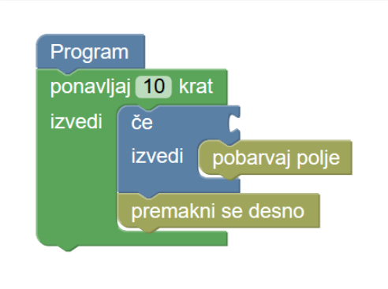
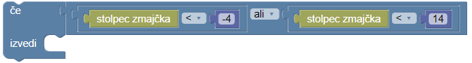

Zmajček barva


Napiši zmajčku navodilo, po katerem bo pobarval vsa označena polja.
Tvoja naloga je napisati program, sestavljen iz ene same zanke 'ponavljaj' in pogoja, kot vidiš na primeru spodaj:

from robot import *
for loop in range(10)
nadaljuj()
if ...:
pobarvaj()
Pravilni pogoj uporablja stolpec z zmajčkom. Primer pogoja s stolpcem, v katerem je zmajček:

Namig: Naloga ima več testov. Tvoj program mora opraviti vse.
Tvoja naloga je napisati program, ki vsa polja preveri s pogojem in določi, ali jih naj zmajček pobarva. Pogoj lahko uporablja senzorja 'stolpec zmajčka' in 'vrstica zmajčka'.
Polja, ki so pod diagonalo, imajo število vrstice strogo manjše od števila stolpca.
Tvoj program lahko natanko enkrat uporabi navodilo pobarvaj polje.